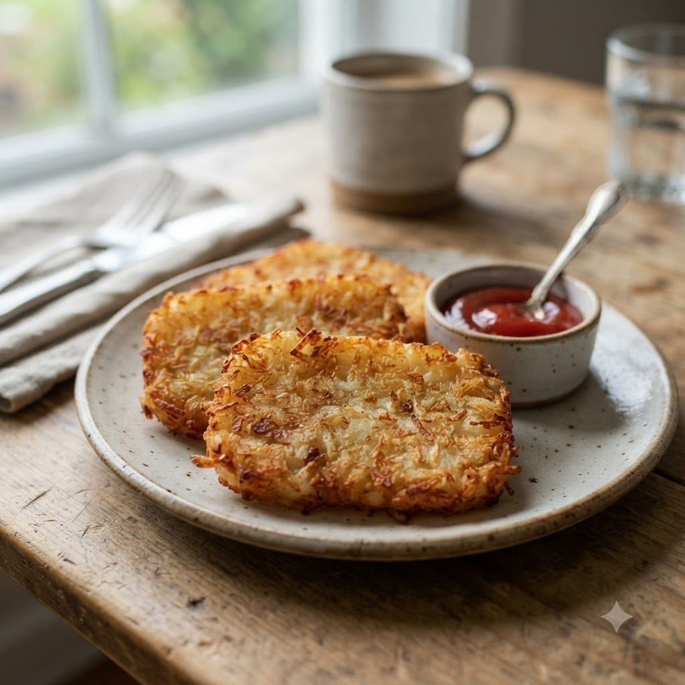

Crispy Air Fryer Hash Browns

Crispy Air Fryer Hash Browns
Airfryer – Fry 200°C 16 min — Serves 4
🔥 Airfryer🍽 Serves 4
Prep ahead: Grate potatoes and squeeze out as much water as possible before mixing — this is key to crispness.
Ingredients
- 3 potatoes, grated and squeezed dry
- 1 tbsp cornflour
- 1/2 tsp salt
- 1/4 tsp black pepper (kali mirch)
- 1 tbsp oil
Method
1Preheat: Preheat the Airfryer to 200°C for 4 minutes before adding the food to the basket.
2Mix grated potato with cornflour, salt, pepper and oil.
3Shape into flat patties.
4Place in the basket in a single layer.
5Air-fry at 200°C for 16 minutes, flipping halfway, until golden and crisp.
Tip: Squeezing out as much water as possible from the potato is key to crispness.